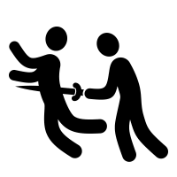

Information
On this webpage you can find a little bit of information you need to know in order to be successful in atWar.
- First of all, it's mandatory to know that the whole game is made by 2 people, Amok and Ivan. They're respectively responsible for programming, and web + design.
Therefor, it's easier to exploit bugs in the game by using scripts through Javascript. This can be done as the game creators are not yet experienced enough to solve this issue.
They are pretty inactive, which means they leave newly bugs behind, and there's barely any development to be seen. Keep that in mind playing the game, don't expect something well-polished.
- Secondly, it's important to use multiple tactics during the gameplay, as well as strategies and using the environment to your advantage.
Doing this is not easy. But you'll learn this over time, by gaining experience. For more information, visit the ''Tactics'' page on our website!
- Lastly, diplomacy. It's very important. Make alliances, and don't backstab, because you'll be getting it back.
